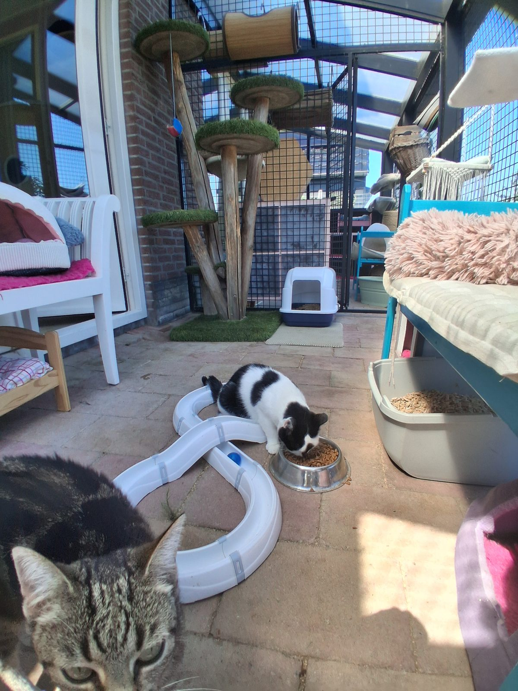

Veel dieetvoeding op voorraad
Veel dieetvoeding van Royal Canin is aanwezig in het pension.
Home › Voeding
Omdat alleen het beste goed genoeg is. Alle voeding zit bij de prijs inbegrepen.

Omdat alleen het beste goed genoeg is, hebben we gekozen voor de voeding van Royal Canin. Standaard voeren we de brokjes Royal Canin Fit 32. Dit is onbeperkt aanwezig: uw kat kan eten wanneer ze dat wil.
Tevens staat er natuurlijk altijd vers drinkwater klaar. 's Avonds krijgen de katten vis of vlees uit blik.
Een speciaal dieet is bij ons geen enkel bezwaar — en het kost niets extra.
Veel dieetvoeding van Royal Canin is aanwezig in het pension.
Wanneer de dieetvoeding onverhoopt niet aanwezig is, moet deze door de eigenaar zelf meegebracht worden.
De prijs per dag blijft voor deze katten precies hetzelfde.
Medicijnen bij het eten? Ook dat regelen we. Het oraal toedienen van medicijnen kost € 1,- per keer; de medicatie brengt u zelf mee. Zie de voorwaarden.
U bent van harte welkom om het pension te bezichtigen. Belt u even van tevoren, dan nemen we alle tijd voor u en uw vragen.